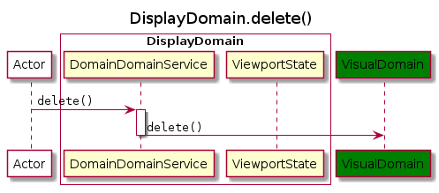
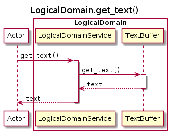
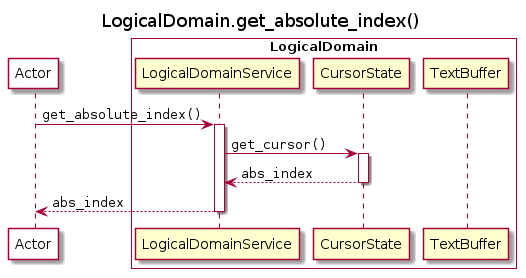
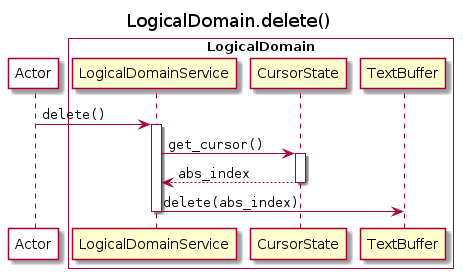

Sequence Diagrams
¶
Display Domain
¶

Visual Domain
¶
Logical Domain
¶



TextEditor
Navigation
1. Specifications & Design
1. Requirements
2. Architecture
2.1. Introduction
2.2. Architectural Goals and Constraints
2.3. System Context
2.4. Containers
2.5. Components
2.6. Code (C4 Level 4)
2.7. Architectural Decisions
2.8. Error Contract
2.9. Open Questions
2.10. Appendix A: Glossary
2.11. Appendix B: Revision History
2.12. Appendix C: Supporting Documents
2.13. Indices and tables
Glossary
Related Topics
Documentation overview
2.
Architecture
Previous:
Visual-Logical Adapter
Next:
2.6.1.
Code (C4 Level 4)
![@startuml
title DisplayDomain.get_lines()
participant Actor as app #white
box "DisplayDomain" #white
participant DomainDomainService as DS
participant ViewportState as VS
end box
participant VisualDomain as VD #green
app -> DS : ""get_lines()""
activate DS
DS -> VD : ""get_lines()""
activate VD
return ""visual_lines""
DS -> DS : ""truncate(visual_lines)""
activate DS
DS -> VS : ""get_range()""
activate VS
return ""start, end""
return ""display_lines""
return ""display_lines""
deactivate DS
@enduml](../../_images/plantuml-3a5a0064a6969d43cb0b864ff8f98ab4fc415eb2.png)
![@startuml
title DisplayDomain.get_cursor()
participant Actor as app #white
box "DisplayDomain" #white
participant DomainDomainService as DS
participant ViewportState as VS
end box
participant VisualDomain as VD #green
app -> DS : ""get_cursor()""
activate DS
DS -> VD : ""get_cursor()""
activate VD
return ""visual_position""
DS -> DS : ""translate(visual_position)""
activate DS
DS -> VS : ""get_range()""
activate VS
return ""start, end""
return ""display_position""
return ""display_position""
@enduml](../../_images/plantuml-2800e1409f91604cc548b85ac165800419c25257.png)


![@startuml
title VisualDomain.get_lines()
participant Actor as app #white
box "VisualDomain" #white
participant VisualDomainService as VS
participant MovementResolver as MR
participant VisualLogicalAdapter as VA
end box
participant LogicalDomain as LD #lightblue
app -> VS : ""get_lines()""
activate VS
VS -> VA : ""get_lines()""
activate VA
VA -> LD : ""get_lines()""
activate LD
return ""text""
VA -> VA : ""wrap(text)""
note left: Wraps lines using internal ""wrapping_map""
activate VA
return ""visual_lines""
return ""visual_lines""
return ""visual_lines""
@enduml](../../_images/plantuml-05e9f449061e84446f6e97a9db945dbe00710914.png)
![@startuml
title VisualDomain.get_cursor()
participant Actor as app #white
box "VisualDomain" #white
participant VisualDomainService as VS
participant MovementResolver as MR
participant VisualLogicalAdapter as VA
end box
participant LogicalDomain as LD #lightblue
app -> VS : ""get_cursor()""
activate VS
VS -> VA : ""get_cursor()""
activate VA
VA -> LD : ""get_cursor()""
activate LD
return ""abs_index""
VA -> VA : ""translate(abs_index)""
activate VA
return ""visual_position""
return ""visual_position""
return ""visual_position""
@enduml](../../_images/plantuml-f0eb565398558137338b5ff181199ddfeb686ce5.png)


![@startuml
title VisualDomain.move_up()
participant Actor as app #white
box "VisualDomain" #white
participant VisualDomainService as VS
participant MovementResolver as MR
participant VisualLogicalAdapter as VA
end box
participant LogicalDomain as LD #lightblue
app -> VS : ""move_up()""
activate VS
VS -> VA : ""get_lines()""
activate VA
VA -> LD : ""get_lines()""
activate LD
return ""logical_lines""
VA -> VA : ""translate(logical_lines)""
activate VA
return ""visual_lines""
return ""visual_lines""
VS -> VA : ""get_cursor()""
activate VA
VA -> LD : ""get_cursor()""
activate LD
return ""abs_index""
VA -> VA : ""translate(abs_index)""
activate VA
return ""visual_position""
return ""visual_position""
VS -> MR : ""move_up(visual_lines, visual_position)""
activate MR
return ""visual_position""
VS -> VA : ""set_cursor(visual_position)""
deactivate VS
activate VA
VA -> VA : ""translate(visual_position)""
activate VA
return ""abs_index""
VA -> LD : ""set_cursor(abs_index)""
deactivate VA
@enduml](../../_images/plantuml-2ccf7c8c88cfed8856280cd6b696aa14fa776a2f.png)